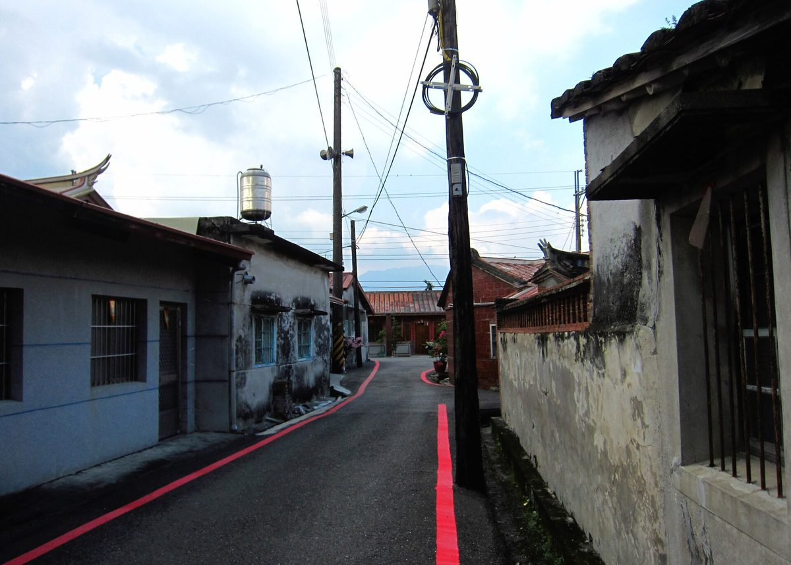

대만 핑둥 츠산 마을, 옛집 고친 돌봄 거점 지붕에 6kW 태양광…아낀 전기요금을 어르신 밥상에

주민이 내놓은 빈 옛집 '라오춰54' 수리 때 환경보호국 권유로 설치, 촌장 추산 월 약 2만 대만달러 요금 절반 줄여…저장장치 없어 정전 땐 못 써
대만 핑둥현 완롼향 츠산(赤山) 마을이 여러 해 비어 있던 옛집을 고쳐 만든 어르신 돌봄 거점 '라오춰54(老厝54)' 지붕에 태양광을 달아, 아낀 전기요금을 공동 식사와 취약가구 돌봄에 쓰고 있다. 마을은 처음엔 현 정부와 함께 버려진 유치원을 거점으로 썼으나 참여 인원이 늘자 마을 자원봉사자인 한 주민이 집안 옛집을 내놓았고, 현 정부 보조금과 주민들의 손으로 수리를 마친 뒤 노동부 일자리 사업을 신청해 운영과 귀향 청년 일자리를 지원받고 있다. 수리 때 낡은 지붕을 바꿔야 하자 환경보호국이 태양광 설치를 권했고, 지금 지붕의 6kW 설비는 자가소비 방식으로 돌아가며 모자라는 전기는 대만전력에서 받는다. 판자밍(潘嘉明) 촌장은 거점이 문을 여는 동안 냉방을 거의 쉬지 않고 돌려 대만전력 전기만 쓰면 한 달 요금이 약 2만 대만달러지만 태양광으로 약 절반을 줄인다고 추산했고, 아낀 돈은 식사 질 개선과 취약가구 지원, 도시락 배달에 쓴다고 밝혔다. 마을은 감시 시스템으로 발전·사용량을 살피며 이상이 생기면 환경보호국과 기술자에게 연락하고, 규정에 맞는 자가소비 전력으로 재생에너지 인증서를 신청해 추가 수익도 노릴 수 있다. 다만 저장장치가 없어 정전 때는 전기를 쓸 수 없어, 마을은 저장장치와 정전 대비 설비를 더하면 조명·냉장고 같은 필수 전력을 지킬 수 있을 것으로 보고 있다.
시민에너지 관점
6kW라는 작은 지붕 설비로 돌봄 거점 전기요금의 절반가량을 덜고, 그 돈이 어르신 밥상과 도시락으로 돌아간다는 것은 마을 태양광의 성과가 용량보다 쓰임에서 나온다는 점을 보여 준다. 설비가 작으면 의미 있는 수익이 나지 않는다는 우려가 있지만, 냉방을 하루 종일 켜야 하는 돌봄 공간에서는 아낀 요금이 곧 돌봄 예산이 된다. 저장장치가 없어 정전 때 멈춘다는 한계를 마을 스스로 밝혔듯, 다음 투자를 무엇에 할지도 시설을 쓰는 주민이 함께 정할 때 돌봄과 에너지가 같이 자란다. 국내 마을회관·경로당 지붕도 주민이 함께 소유하고 운영하는 발전소로 만들어, 아낀 돈과 번 돈이 마을 돌봄으로 돌아가게 해야 한다.
출처: NOWnews今日新聞 2026-10-30 生活中心/綜合報導 원문 보기
台湾・屏東の赤山集落、古民家を改修したケア拠点の屋根に6kWの太陽光…浮いた電気代を高齢者の食卓に
住民が提供した空き家「老厝54」の改修時に環境保護局の勧めで設置、村長の試算で月約2万台湾ドルの電気代を半減…蓄電設備がなく停電時は使えず
台湾・屏東県万巒郷の赤山（チーシャン）集落が、長年空き家だった古民家を改修してつくった高齢者ケア拠点「老厝54」の屋根に太陽光発電を設け、浮いた電気代を共同の食事や支援が必要な世帯のケアに充てている。集落は当初、県政府と共に廃園となった幼稚園を拠点にしていたが、参加者が増えて手狭になると、集落のボランティアを務める住民が自家の古民家を提供し、県政府の補助金と住民の手で改修を終えたうえで、労働部の雇用事業に申請して運営とUターン青年の雇用の支援を受けている。改修の際に傷んだ屋根を替える必要があったため環境保護局が太陽光の設置を勧め、現在屋根の6kWの設備は自家消費方式で稼働し、足りない電気は台湾電力から受けている。潘嘉明村長は、拠点が開いている間は冷房をほぼつけっぱなしで、台湾電力の電気だけなら月の電気代は約2万台湾ドルになるが、太陽光で約半分を減らせると試算し、浮いたお金は食事の質の向上や支援世帯への援助、弁当の配達に使っていると述べた。集落は監視システムで発電量と使用量を確認し、異常があれば環境保護局や技術者に連絡しており、規定を満たす自家消費の電力で再生可能エネルギー証書を申請して追加収入を得ることもできる。ただ蓄電設備がないため停電時には電気が使えず、集落は蓄電と停電対策の設備を加えれば照明や冷蔵庫など必要な電力を保てるとみている。
市民エネルギーの視点
6kWという小さな屋根の設備でケア拠点の電気代のおよそ半分を減らし、そのお金が高齢者の食卓や弁当に回っていることは、村の太陽光の成果が容量よりも使い道から生まれることを示している。設備が小さければ意味のある収益は出ないとの懸念もあるが、一日中冷房をつける必要があるケアの場では、浮いた電気代がそのままケアの予算になる。蓄電設備がなく停電時には止まるという限界を集落自ら明らかにしたように、次に何へ投資するかも施設を使う住民が共に決めるとき、ケアとエネルギーが一緒に育つ。韓国の集落会館や敬老堂の屋根も、住民が共に所有し運営する発電所にして、浮いたお金と稼いだお金が村のケアに戻るようにすべきだ。
出典: NOWnews今日新聞 2026-10-30 生活センター／総合報道 原文を読む
台湾屏东赤山社区老屋改建的关怀据点屋顶装6kW太阳能…省下电费用于长辈餐食
居民提供闲置老屋"老厝54"，修缮时经环保局建议设置，村长估算每月约2万新台币电费可省一半…尚无储能，停电时无法供电
台湾屏东县万峦乡赤山社区在一栋闲置多年、经修缮改建为长辈关怀据点的老屋"老厝54"屋顶设置太阳能发电，把省下的电费投入共餐和弱势家庭关怀。社区起初与县政府一起以一处废弃幼儿园作为据点，参与人数增加后空间不敷使用，一位担任社区志工的居民主动提供自家老屋；社区争取县政府补助、由居民动手修缮完成后，又申请劳动部多元就业开发方案，支持据点营运和返乡青年就业。修缮时破损的屋顶需要更新，环保局便建议设置太阳能光电；目前屋顶的6kW系统采用自发自用方式，不足部分由台电供应。村长潘嘉明估算，据点开门期间冷气几乎全天开着，若全靠台电供电每月电费约2万新台币，搭配太阳能后约可减少一半，省下的钱用于提升共餐质量、支援弱势家庭和送餐服务。社区通过监测系统掌握发电和用电情况，发现异常可联系环保局及技术人员处理；符合规定的自用电量还可申请再生能源凭证，争取额外收益。不过目前尚未配置储能，停电时无法供电，社区认为日后若增设储能和停电备援设备，就能维持照明、冰箱等必要用电。
市民能源视角
仅靠6kW的小型屋顶设备就省下关怀据点约一半电费，而这笔钱又回到长辈的餐桌和便当上，说明村庄太阳能的成果不在容量，而在用途。有人担心设备太小产生不了有意义的收益，但对必须整天开冷气的照顾空间而言，省下的电费本身就是照顾预算。正如社区自己坦言没有储能、停电时会停摆，下一步投资什么，也应由使用设施的居民共同决定，照顾与能源才能一起成长。韩国的村民会馆和敬老堂屋顶，也应建成由居民共同拥有和经营的电站，让省下和赚到的钱回到村里的照顾服务。
来源: NOWnews今日新闻 2026-10-30 生活中心/综合报道 查看原文
Taiwan's Chishan village in Pingtung puts 6kW of solar on a restored old house used for elder care, spending the savings on seniors' meals
Panels went up on "Laocuo 54," an empty house donated by a resident, on the environmental bureau's advice during repairs; village chief estimates a monthly bill of about NT$20,000 is halved, but with no storage the power stops in a blackout
Chishan village in Wanluan Township, Pingtung County, Taiwan, has put solar panels on the roof of "Laocuo 54," a long-empty old house that residents restored as a care hub for older people, and is spending the money saved on power bills on communal meals and support for vulnerable households. The village first used an abandoned kindergarten as its hub together with the county government, but as numbers grew a local resident who volunteers in the community offered a family house; after repairs funded by a county subsidy and done by residents themselves, the village applied to a Ministry of Labor employment programme that supports the hub's operation and jobs for young people returning home. Because the damaged roof had to be replaced during the repairs, the environmental protection bureau suggested installing solar, and the roof now carries a 6kW system run for self-consumption, with Taipower supplying any shortfall. Village chief Pan Chia-ming estimated that with the air conditioning running almost all day while the hub is open, relying on Taipower alone would cost about NT$20,000 a month, but solar cuts that by about half, and he said the savings go towards better meals, help for vulnerable families and meal deliveries. The village monitors generation and use through a monitoring system, contacting the bureau and technicians when problems appear, and it can apply for renewable energy certificates for qualifying self-consumed power to seek extra income. With no battery storage, however, the system cannot supply power during outages, and the village believes adding storage and backup equipment would keep essentials such as lighting and refrigerators running.
Citizen Energy View
That a small 6kW rooftop system cuts roughly half of a care hub's power bill, with the money going back into seniors' meals and lunch boxes, shows that the value of village solar comes from how it is used rather than how big it is. Some worry that small systems cannot earn meaningful income, but in a care space where the air conditioning must run all day, the money saved becomes the care budget. Just as the village itself acknowledged that the system stops in a blackout because it has no storage, care and energy grow together when the residents who use the building also decide together what to invest in next. In Korea, too, the roofs of village halls and senior centres should become power plants that residents co-own and run, so that the money saved and earned flows back into care in the village.
Source: NOWnews 2026-10-30 Lifestyle desk (compiled report) Read the original